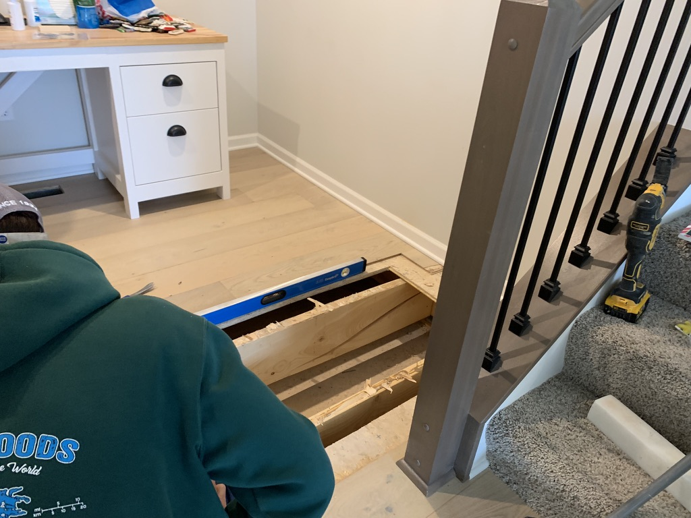

Blown up floor joist | January, 2023
Our family was sleeping when we were suddenly woke by a loud explosion. The whole house shook violently. Panicked and scared we ran outside. After clearing the home of any immediate dangers there was something still lurking under the floors.
After searching the house we could not find an immediate cause. After ensuring there was no danger we walked the house and found our floor was bowed upwards by several inches. After meeting with the builder they ripped the flooring out and determined a floor joist exploded. After the repair was made our quarter round trim was damaged and now shows visible cuts in them where they had to cut the trim to rip out the flooring
